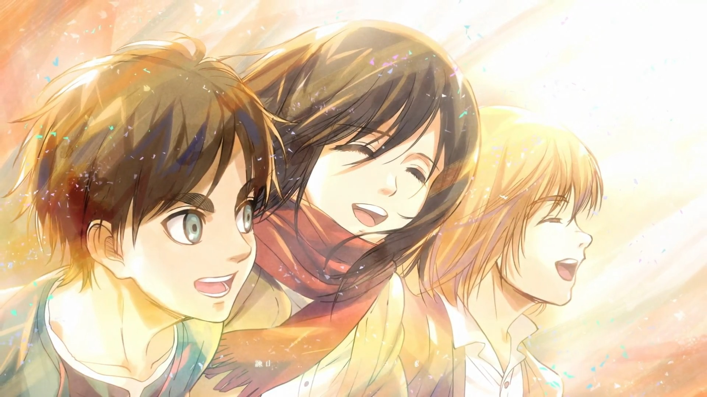
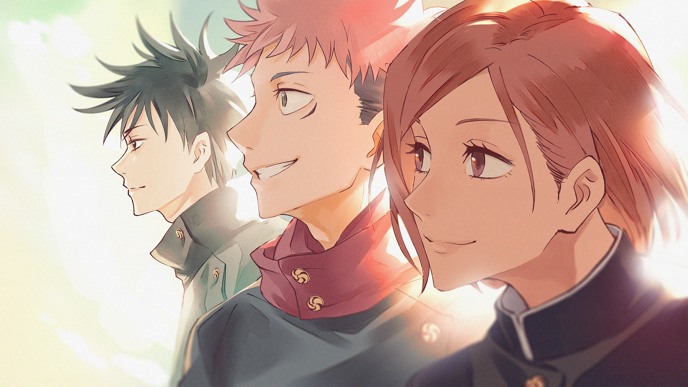
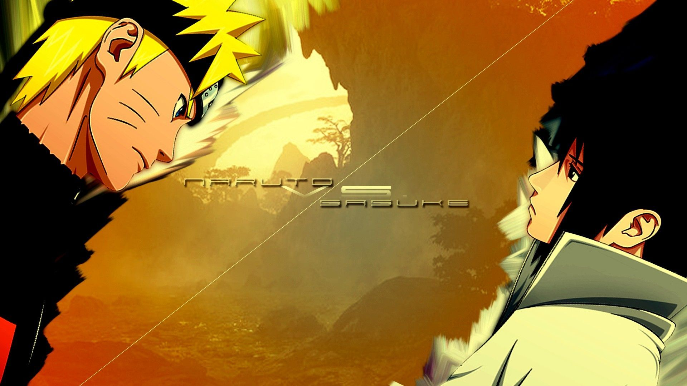

Anime

Anime: Attack On Titan
Anime: Attack On Titan
Author: Hajime Isayama
My Thoughts: Probably my most favourite anime. The story is centered around a group of people who
fight giant monsters known as Titans. And they try to uncover the secrets of the titans and try not to loose
their lives in the process.I watched this about 5 years ago and I still get shocked by all the twists and
turns in the story.

Anime: Jujutsu Kaisen
Anime: Jujutsu Kaisen
Author: Gege Akutami
My Thoughts: This anime is centered around a group of individuals who have special powers due to a
phenomenon known as cursed energy. The best part of JJK is that all the characters are extremely cool,
and all the fights are super fun to watch/read. It's pure entertainment!

Anime: Naruto